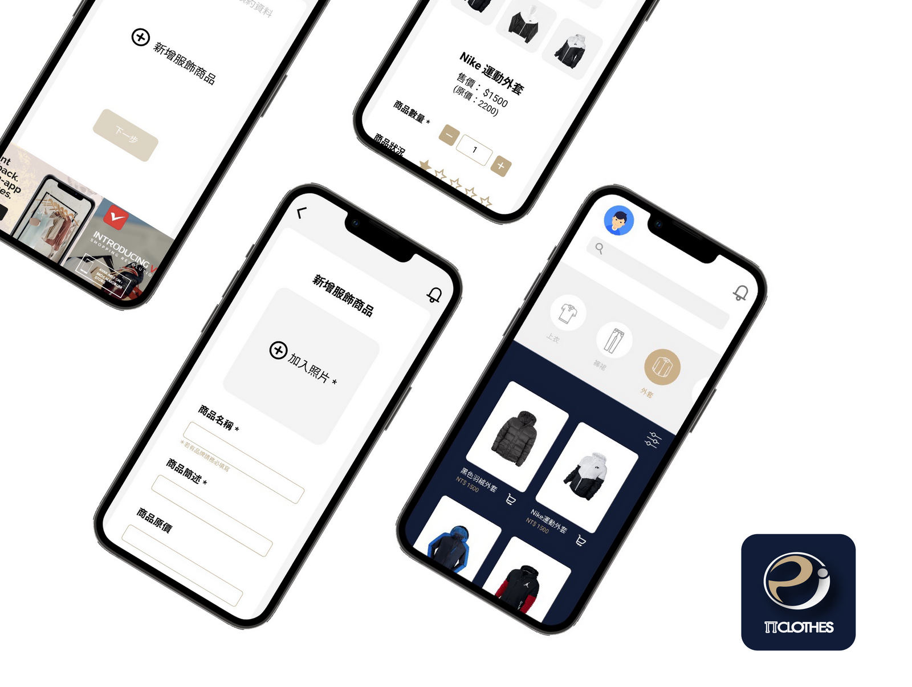
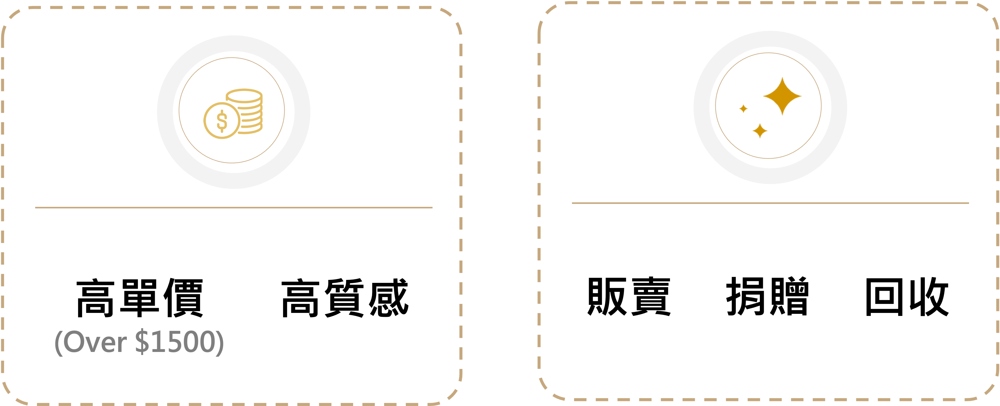
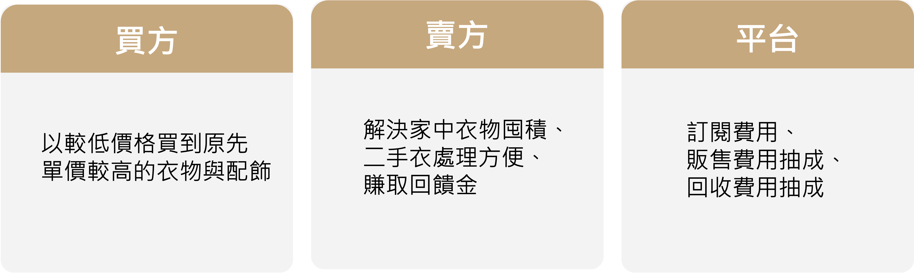
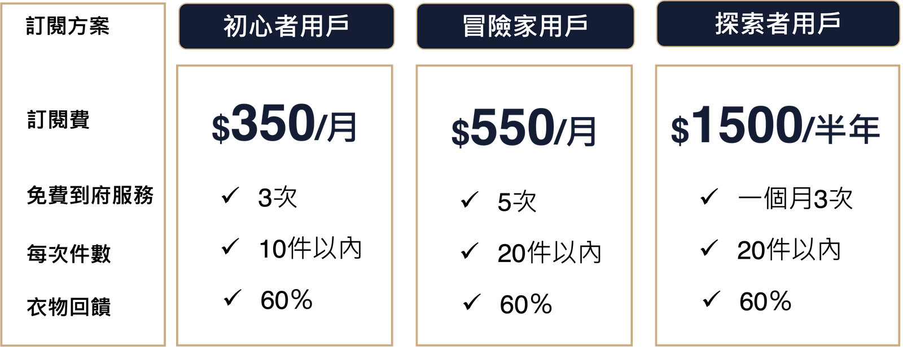

π CLOTHES
>
本專案為參加林口新創園跨界超越競賽所發想的產品。透過前期使用者訪談，發現現今消費者往往囤積不符合自身風格或尺寸的服飾於家中，且不乏相對高價、優質的服飾。年輕世代的消費者對二手服飾購買的態度傾向購買高CP值的服飾，因此團隊欲打造一針對高品質、相對高單價的二手服飾交易平臺。並嘗試發揮服飾循環再利用的價值。
專案時間：2021.10 - 進行中
專案負責項目：問卷設計、使用者訪談與分析、商業模式討論與擬定、線框稿與原型製作、易用性測試與優化
針對使用者訪談得出，消費者普遍存在衣物大量囤積造成生活困擾的麻煩，及認為現今市面上衣物販售平台上架過程過於繁瑣，覺得用來處理二手服飾不符合成本效益。因此團隊欲解決衣物囤積、回收衣物麻煩且沒足夠誘因的問題。
希望現有的二手服飾可以重新活躍於市場中，藉由循環再利用，達到衣服生命與利用價值的無限。
賣方能解決家中衣物囤積的麻煩，並提供足夠的誘因讓賣方願意將衣服拿出來處理
買方能以較低價格買到原先單價較高的服飾
針對快時尚、永續時尚為主題招募11位受放者進行訪談，整理出三種Persona，分別為：
1.
深陷於快時尚的消費者
2. 因風格轉變而囤積衣物的消費者
3. 曾購買快時尚但已改變消費習慣的消費者。
並發現三類消費者普遍存在衣物囤積於家中的問題，但有些服飾當初買的時候較為高價、品質也保存的很好，可能尺寸或是風格已經不符合自己，因此捨不得捐出。在處理二手服飾上，又因為處理麻煩且缺乏誘因，導致就這樣囤積於家中不想處理。
而在二手服飾市場分析部分，團隊發現年輕世代20-35歲的消費者對於二手衣購買態度多採願意購買，且想花少錢就能購買到原先價格很高的產品。
針對使用者訪談的痛點與需求分析，團隊欲設計一二手服飾買賣平台，主要服務以高質感、高單價服飾販售為主，次要服務則提供家中有囤積衣物者，代理捐贈及回收。
針對二手服飾之處理，平台採訂閱制，並在服飾成功賣出及回收後，給予賣家(訂閱者)回饋金。而追求高CP值二手服飾的消費者，則可於平台上以相對較便宜的價格購買品質較好的服飾。平台則賺取訂閱費及服飾賣出及回收金額的抽成費用。平台針對不同方案的訂閱者，提供不同次數的到府收衣服務及回收件數。
 
3 步驟進行二手服飾的上架出售：1. 選擇出售服務、2. 填寫服飾資料、3. 填寫預約資料，並可查詢到府收衣專人即時狀態。
點擊上方圖片播放
二手衣回收與捐贈大致與販售相同，影片以捐贈流程為例。
點擊上方圖片播放
共招募6位受測者針對平台主要功能進行易用性測試，想得到：
1. 二手服飾購買流程是否操作順暢
2.
上架平台販售流程是否操作順暢
3. 使用者是否可順利追蹤自己購買清單
4. 捐贈或回收流程是否操作順暢
5. 使用者是否可以順利追蹤收衣專人即時狀態
進行易用性測試中，主要發現有二：
1. Menu 取名不夠直觀：受測者認為查看清單、追蹤清單及預約查詢在名詞定義上易混淆。
2. 元件安排位置：原先販售、捐贈及回收之服務預約，需點擊底部Logo icon
才可預約。受測者認為Logo icon 設計用意不清楚，需要經過一番探索才知道點擊後的功能。
1. 針對目前原型： Menu 取名進行優化，並針對改良後再進行易用性測試
2.
業師諮詢：與業師討論目前提供的服務與商業策略是否需要調整
3. 比賽時程：4/23 進行總決賽發表與頒獎